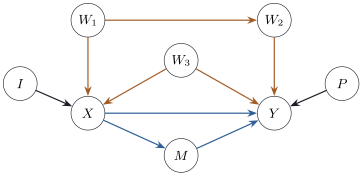
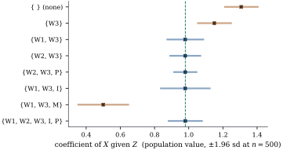

25.4 Adjustment sets and the back-door criterion
If confounding is association along back-door paths, the remedy is to block them by conditioning on variables on them, that is, by including those variables as regressors. This section says which sets do the job, proves that they do, and compares their precision.
25.4.1. The criterion
Let
(i) no node in
(ii)
Such a set is called a (back-door) adjustment set.
Condition (ii) closes the non-causal routes.
Condition (i) protects the causal ones: a descendant of
Recall from Section 25.2 that
Let
(a) Adjustment formula. Suppose
where the outer expectation is over the distribution of
(b) The criterion gives ignorability. If
(c) Linear models. In a linear structural causal model whose disturbances have finite positive variances, if
The proofs of (b) and (c) below are complete when
Proof.
(a) Using the tower rule, then the conditional independence together with positivity, then
(b) When
General adjustment sets (sketch). Form a graph containing both the original variables and their counterparts in the model modified by
- (c) By Proposition 25.3.5(a),
Part (a) averages the conditional mean at
Warning. Only the coefficient of
25.4.2. An example with eight variables
Figure 25.4.1 shows
a linear model with unit-variance disturbances and
The listing computes the coefficient of
| adjustment set | valid | coefficient of |
simulated sd | |
|---|---|---|---|---|
| none | no | |||
| no | ||||
| yes | ||||
| yes | ||||
| yes | ||||
| yes | ||||
| no | ||||
| yes |
Every valid set gives

Figure
25.4.1. The graph of Example (Choosing an adjustment set).
Blue arrows form the directed paths from
import numpy as np
names = ["W1", "W3", "I", "P", "W2", "X", "M", "Y"] # a topological order
k = {v: j for j, v in enumerate(names)}
B = np.zeros((8, 8)) # B[j, i]: coefficient of i in j's equation
for child, parent, coef in [("W2", "W1", 0.8), ("X", "W1", 0.7), ("X", "W3", 0.6), ("X", "I", 0.9),
("M", "X", 0.8), ("Y", "X", 0.5), ("Y", "M", 0.6), ("Y", "W2", 0.7),
("Y", "W3", 0.8), ("Y", "P", 1.0)]:
B[k[child], k[parent]] = coef
A = np.linalg.inv(np.eye(8) - B) # V = A U
Sigma = A @ A.T # unit disturbance variances
tau = A[k["Y"], k["X"]] # total effect: sum over directed paths
def population_fit(Z):
"""Coefficient of X in L(Y | X, Z) and the large-sample sd factor sigma_{Y.XZ}/sigma_{X.Z}."""
R = [k["X"]] + [k[z] for z in Z]
coef = np.linalg.solve(Sigma[np.ix_(R, R)], Sigma[R, k["Y"]])
res_y = Sigma[k["Y"], k["Y"]] - Sigma[k["Y"], R] @ coef
Zi = [k[z] for z in Z]
res_x = Sigma[k["X"], k["X"]] - (Sigma[k["X"], Zi] @ np.linalg.solve(Sigma[np.ix_(Zi, Zi)], Sigma[Zi, k["X"]])
if Z else 0.0)
return coef[0], np.sqrt(res_y / res_x)
sets = [[], ["W3"], ["W1", "W3"], ["W2", "W3"], ["W2", "W3", "P"], ["W1", "W3", "I"],
["W1", "W3", "M"], ["W1", "W2", "W3", "I", "P"]]
print(f"total effect of X on Y: {tau:.3f}")
for Z in sets:
c, f = population_fit(Z)
print(f"Z = {{{', '.join(Z)}}}".ljust(26) + f"coefficient {c:6.3f} sd factor {f:5.3f}")
25.4.3. Which adjustment set is most precise
All valid sets estimate
the square of the factor in the table. A good
adjustment set explains much of
Let
(a) If
(b) If
Proof. Partial variances are the
mean squared errors of best linear predictors, and
projecting onto a larger space can only reduce them (Theorem 2.5.2(c)).
(a) By Proposition 14.5.2
applied with
In Example (Choosing an adjustment set),
a direct computation from
If every adjustment set contains an unrecorded variable, as in Example (Clinic visits and health), other structure must be used: an instrumental variable (Theorem 24.4.2 in Chapter 24), or the front-door criterion of Pearl (1995), which uses an observed mediator; or a sensitivity analysis asks how strong an unobserved confounder would have to be, using formulas such as Eq. 25.3.3.
25.4.4. Exercises
A. Check your understanding
In Example (Choosing an adjustment set),
decide which of
Solution. None does.
B. Practice
Let
Solution. Replacing
In Example (Choosing an adjustment set),
show that the coefficient of
Solution. Write
Suppose
C. Going deeper
Positivity is not a technicality. Let
(a) Show that the average effect
(b) Show that the right-hand side of Eq. 25.4.1 is not defined, because the positivity condition of Theorem 25.4.1(a) fails at
(c) Show that the joint distribution of
What, then, is the regression’s answer an answer to?
Solution.
(a) Under
(b)
(c) The event
So the regression reports
When every adjustment set contains an unrecorded
variable, an observed mediator can still
identify the effect. Let
(a) Show that neither
(b) Show that the slope of
(c) Show that the coefficient of
(d) Conclude that the product of the two estimable slopes is the total effect
(e) Show that the construction is fragile: if
Solution.
(a) The path
(b)
(c) Since
(d) The total effect of
(e) Replace